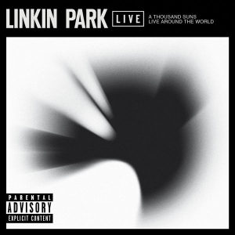

A Thousand Suns (2008-2010)
Portada oficial.
A Thousand Suns es el cuarto álbum de estudio de la banda de rock estadounidense Linkin Park. Fue lanzado el 13 de septiembre de 2010[1] por Warner Bros. Records. El álbum fue producido por Mike Shinoda y Rick Rubin, quienes también habían trabajado juntos para producir el álbum de estudio anterior de la banda, Minutes to Midnight (2007). Las sesiones de grabación de A Thousand Suns se llevaron a cabo en NRG Recording Studios en North Hollywood, California, desde 2008 hasta principios de 2010. A Thousand Suns es un álbum conceptual que trata sobre los miedos humanos como la guerra nuclear. La banda ha dicho que el álbum es un cambio drástico con respecto a su trabajo anterior; experimentaron con sonidos diferentes y nuevos. Shinoda dijo a MTV que el álbum hace referencia a numerosos temas sociales y combina ideas humanas con tecnología. El título es una referencia al Bhagavad Gita, una línea que fue popularizada en 1945 por J. Robert Oppenheimer, quien describió la bomba atómica como "tan brillante como mil soles". También aparece en una línea del primer sencillo del álbum, "The Catalyst". A Thousand Suns es el álbum de estudio más largo de Linkin Park hasta la fecha, con 47 minutos. "The Catalyst" se envió a la radio y se lanzó a los minoristas de música digital el 2 de agosto de 2010. "The Catalyst" alcanzó el puesto 40 en las listas de canciones alternativas y canciones de rock de Billboard. Se lanzaron tres sencillos más para promocionar el álbum: "Waiting for the End", "Burning in the Skies" e "Iridescent". "The Catalyst" y "Waiting for the End" obtuvieron la certificación de oro de la Recording Industry Association of America (RIAA). Linkin Park promocionó el álbum a través de la gira A Thousand Suns World Tour desde octubre de 2010 hasta septiembre de 2011. El álbum polarizó a los fans, pero fue recibido en su mayoría positivamente por los críticos, algunos de los cuales consideraron que era una evolución natural para la banda. El disco debutó en el número uno en más de diez listas y fue certificado platino por la RIAA en agosto de 2017.